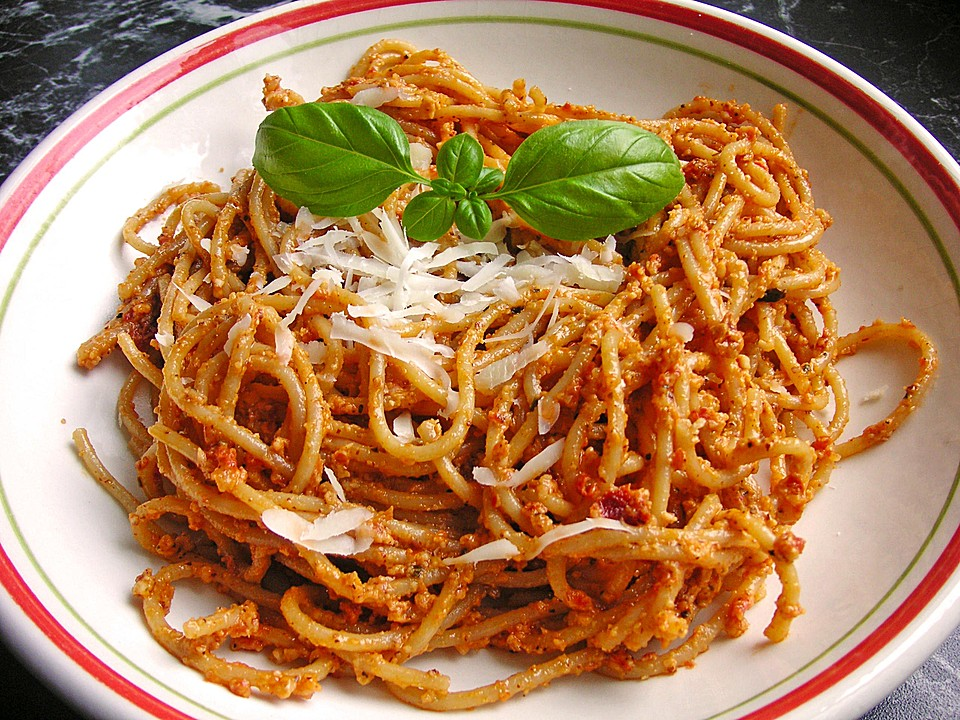

Schaschliktopf
20 Minuten
Alle Zutaten in große Stücke schneiden. Zwiebeln und Speck in einem großen
Bräter ordentlich anbraten. Zwiebeln und Speck auf den...
Tag 2

Pasta in leckerer Pesto-Tomatensoße
15 Minuten
Für die Soße die Zwiebeln in Würfel schneiden. Olivenöl in einer Pfanne
erhitzen, Zwiebelwürfel und Rohschinken-Würfel anbraten. Feta in grobe Würfel
schneiden und mit in die Pfanne geben. Sobald der Feta zu schmelzen beginnt, die
Dose geschälte Tomaten mit in die Pfanne geben. Tomaten zerdrücken und die Soße
ein paar Minuten erhitzen. Dann Hitze abschalten und das Glas Pesto alla
Calabrese in die Soße rühren.